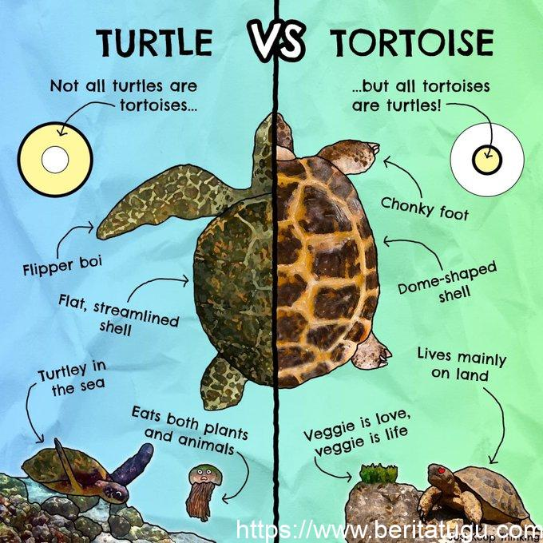

Pertemuan 4 : TableContoh Sample Table Perbandingan |
||||
|  |
PerbandinganKura - Kura dengan Penyu(Chelonian) |
|||
Rentang Usia |
Habitat Hidup |
Makanan |
Bentuk Kaki |
|
Kura - Kura |
80-150 tahun | Darat dan Air | Herbivora | Berkaki pendek dan kuat dan dapat ditekuk |
Penyu |
60-70 tahun | Laut (di darat hanya untuk bertelur) | Omnivora | Tipis berselaput dan panjang |